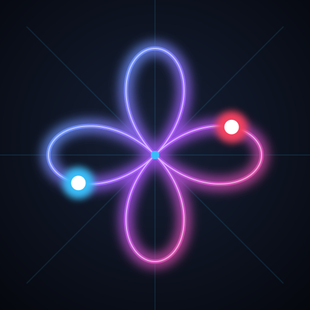

Kamera nicht verfügbar
📷 Kamera starten
⚙️

Poi Mirror v1.1
✕
Kamera & Video
Kamera-Quelle
Kamera wird gesucht…
🔄 Kamera wechseln (Front/Back)
Replay-Delay (Zeitversatz)
0.0s
↔️ Spiegeln: An
🔴 Aufnahme
LED-Tracking & Trails
Trail-Länge
0.60
Licht-Schwellenwert (LED)
90%
Muster & Raster
Raster-Typ
Keines
4-Wege (Kardinallinien)
8-Wege (Kardinal + Diagonal)
Triquetra / 3-Wege
Blumen-Muster
Keines
4-Petal Antispin
3-Petal Antispin
4-Petal Inspin
3-Petal Inspin
Muster-Grösse
40%
Sound & Metronom
⏱️ Metronom: Aus
🎵 Sektor-Sound: Aus
Tempo (BPM)
90 BPM
Sound-Instrument
Synth Bell
Kalimba
Marimba
Leertaste
Metronom |
R
Aufnehmen |
M
Spiegeln |
C
Kamera |
H
Menü